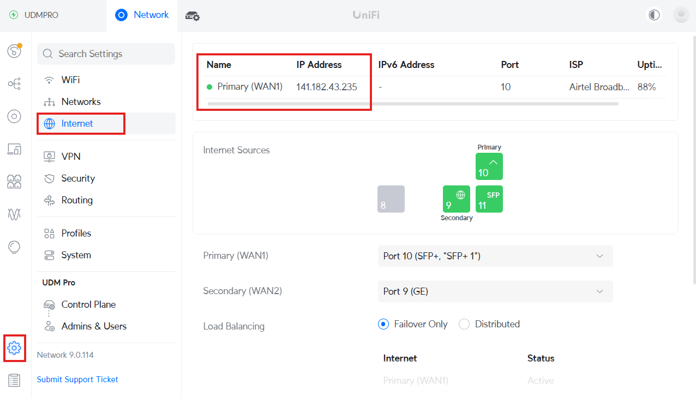
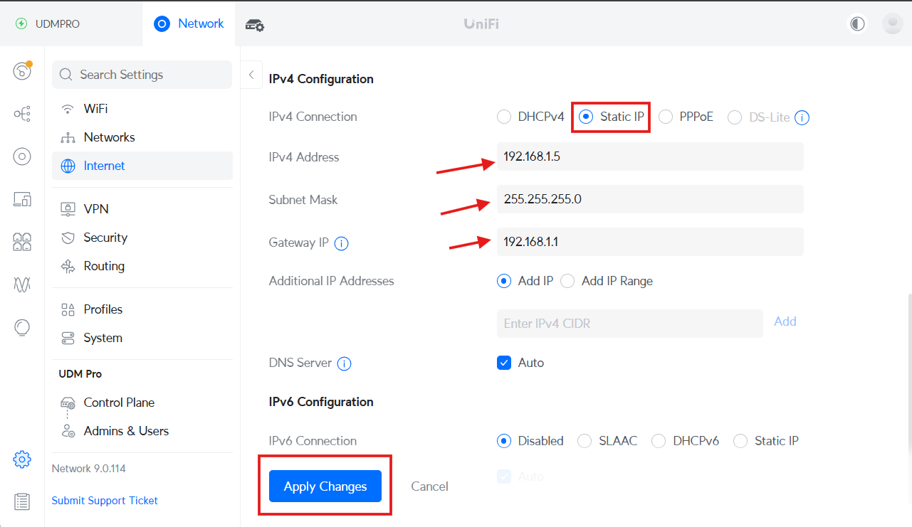
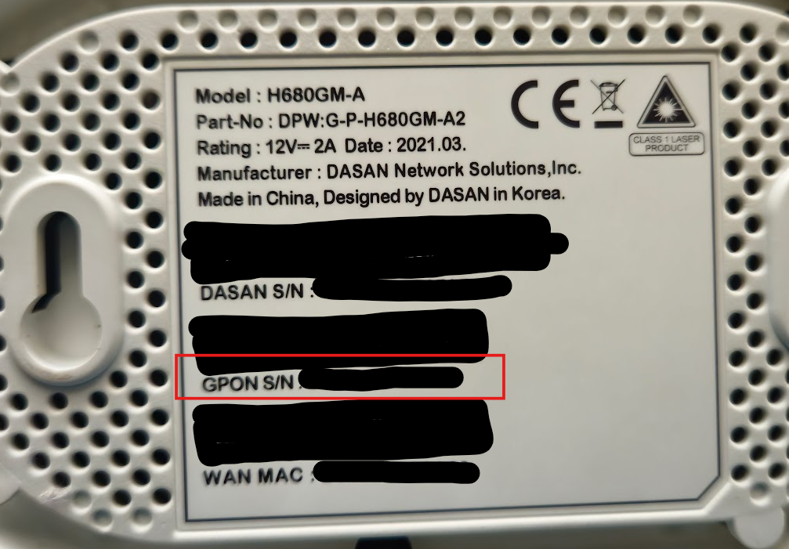
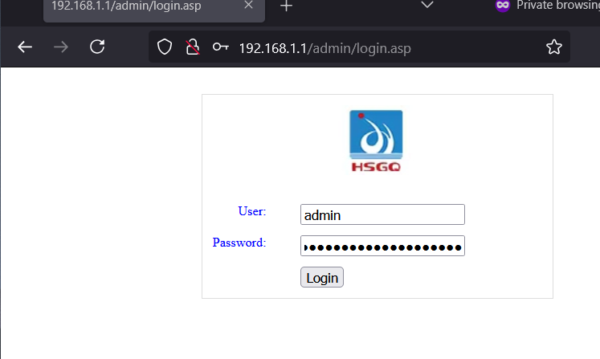
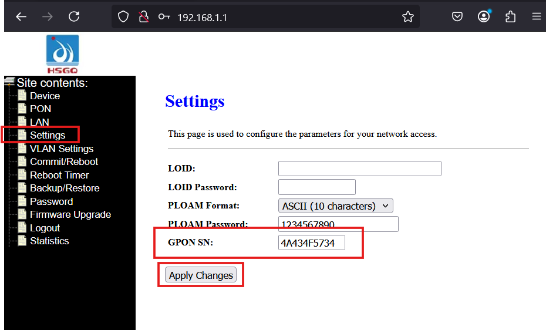
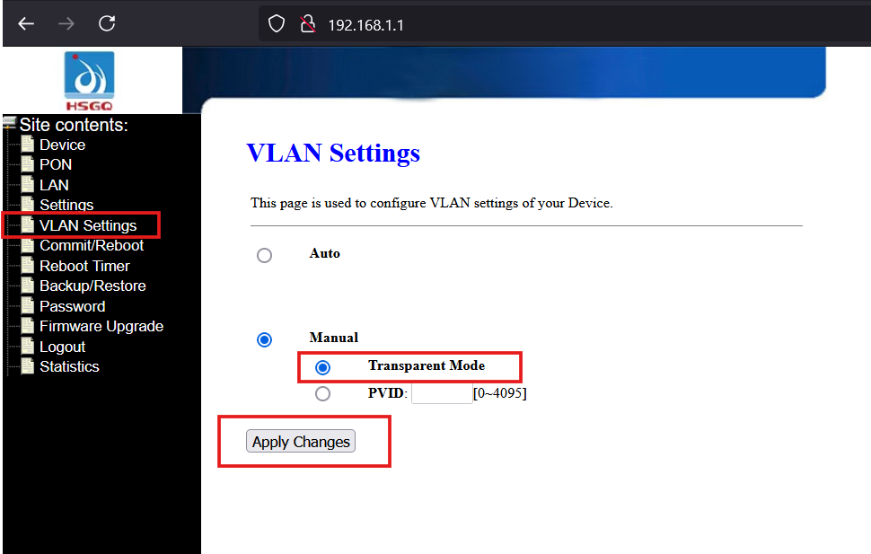
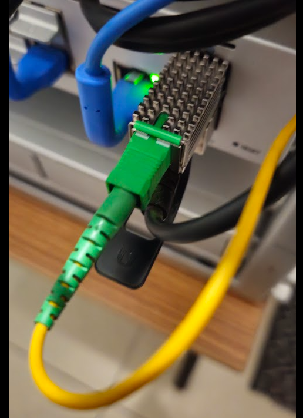
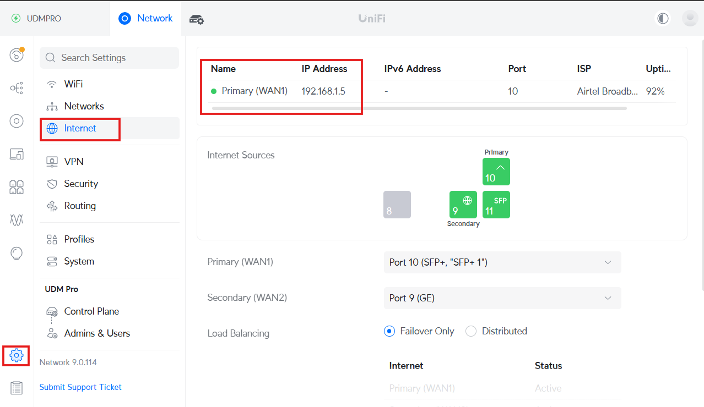
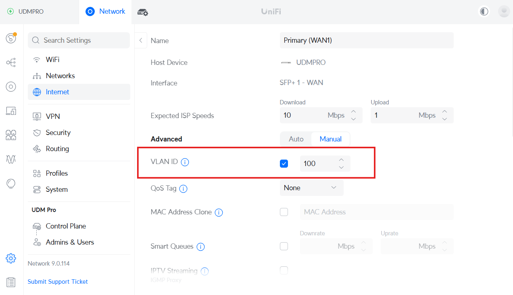
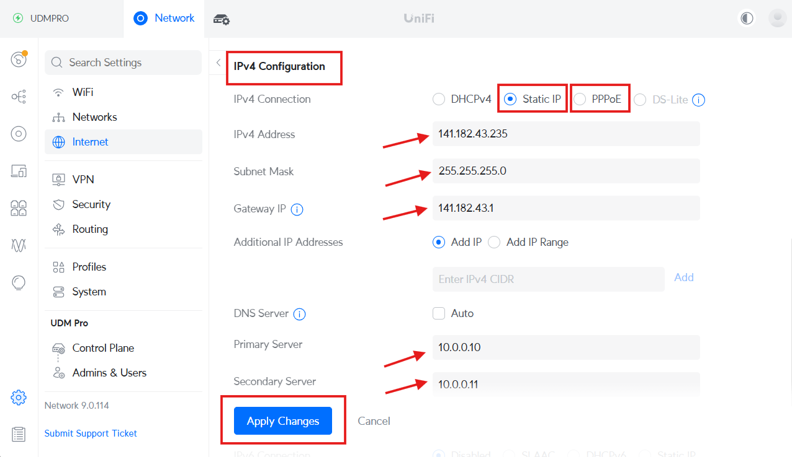

How to Configure an HSGQ ODI / DFP-34X-2C2 GPON ONU SFP Module with Airtel Fiber in UDM Pro
Configuring an HSGQ ODI / DFP-34X-2C2 GPON ONU SFP Module with Airtel Fiber in UDM Pro involves several steps. Follow this guide to ensure a smooth setup.
Step 1: Insert the SFP Module
Insert the HSGQ ODI / DFP-34X-2C2 GPON ONU SFP module into your router’s SFP/SFP+ port.
Step 2: Configure UDM Pro IP Settings to Access GPON SFP Module GUI
- Access your router’s web UI.
- Navigate to Settings > Internet > Primary (WAN1) > IPv4 Configuration.
- Enter the IP manually within the same range as the SFP module:
- IP Address: 192.168.1.5
- Subnet Mask: 255.255.255.0
- Gateway: 192.168.1.1
- Keep the DNS setting as Auto or enter any preferred DNS.
- Click Save.


Step 3: Retrieve GPON Serial Number from Airtel Router
- Check the back of your Airtel Fiber Router (e.g., Dasan router).
- Locate and copy the GPON S/N.

Step 4: Access the SFP Module GUI
- Open a web browser and go to http://192.168.1.1. ( default login credentials are typically "admin" as the username and "admin" as the password )

- Navigate to Settings.
- In the GPON SN field, enter the GPON serial number you copied from the Airtel router.
- Click Apply Changes.

Step 5: Configure VLAN Settings
- Go to VLAN Settings.
- Select Manual.
- Choose Transparent Mode.
- Click Apply Changes.

Step 6: Connect the Fiber Patch Cord
- Insert the fiber patch cord into the SFP module.

- Wait for about 2 minutes to allow the connection to stabilize.
Step 7: Configure Internet Settings on UDM Pro to Access Internet and Revert Old Settings from Step 2
- Open the UDM Pro Portal.
- Navigate to Settings > Internet > Primary (WAN1) > IPv4 Configuration.
- Enter VLAN ID as 100.


- Choose one of the following options based on your Airtel connection type:
- Static IP): Enter the IP Address, Subnet Mask, and Gateway provided by the Airtel team.
- PPPoE : Select PPPoE and enter your username and password provided by Airtel.

- Click Apply Changes.
Final Step: Enjoy Your Connection!
Your Airtel Fiber connection should now be successfully configured through the GPON ONU SFP module on your UDM Pro. If you face any issues, try rebooting your UDM Pro and SFP module.